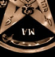

O
Tetragrama
Para que compreendamos o que significa
o Tetragrammaton é necessário, antes de
tudo, definir acrônimo. A palavra acrônimo
tem origem no grego (akron = extremidade + onymo
= nome) e significa o conjunto de letras, pronunciado
como uma palavra, formado a partir das letras iniciais (ou de
sílabas) de palavras sucessivas que constituem uma denominação.
Por exemplo, a sigla NASA (National Aeronautics and Space Administration)
é um acrônimo.
Dessa
forma, a palavra Tetragrama tem origem no grego (tetra
= quatro + gramma = letra) e significa
a expressão escrita, constituída de quatro letras
ou sinais gráficos, destinada a representar uma palavra,
acrônimo, abreviatura, sigla ou a pauta musical de quatro
linhas do canto-chão.
Acredita-se que o Tetragrama hebraico designa o
nome pessoal do "Deus de Israel", como foi originalmente
escrito e encontrado na Torah, o primeiro livro do Pentateuco.
Este tetragrama varia como YHWH, JHVH, JHWH e YHVH. Em algumas
obras, especialmente no Antigo Testamento escrito em sua maioria
em hebraico com partes em aramaico, o Tetragrama surge mais de
6 mil vezes (de forma isolada ou em conjunção com
outro nome divino).
O impronunciável
nome de Deus
A tradição esotérica dos judeus,
a cabala, considera o nome de Deus sagrado e impronunciável.
Possivelmente, a origem deste conceito está no terceiro
Mandamento: "Não tomarás o nome do Senhor
teu Deus em vão; porque o Senhor não terá
por inocente o que tomar o seu nome em vão".
(Êxodo - Capítulo XX - Versículo VII). Assim,
um grupo de sábios judeus, conhecidos como Massoretas,
incorporou "acentos" que funcionavam como vogais e viabilizavam
a pronúncia do tetragrama, resultando na palavra Adonai
(Senhor), que passou a ser utilizada para pronunciá-lo.
Os nomes Jeová, Iehovah, Javé, Iavé, ou ainda
Yahweh, são adaptações para a língua
portuguesa da palavra Adonai, e não do tetragrama original.
Porém,
há ainda uma crença entre os judeus do início
do período cristão, que a própria palavra
Torah seria parte do nome divino. Há outra relação
interessante encontrada nos nomes originais de Adão e Eva,
Yod e Chawah, respectivamente. Uma combinação entre
estes dois nomes resulta numa das variações do tetragrama,
YHWH, fato que sugere uma relação entre Criador
e criatura. Com o decorrer do tempo, foram adotados outros termos
para se referir ao Tetragrama: "O Nome", "O Bendito"
ou "O Céu".
O místico cristão, Jacob Boehme,
utilizando-se de uma cabala gráfica (conhecida como Árvore
da Vida), encontrou os 72 Nomes de Deus (publicado em 1652,
no livro Oedipus Aegypticus). Sendo que todos são
formados por apenas quatro letras, o que caracteriza mais uma
vez o tetragrama. Seguindo este raciocínio, encontramos
também Tupã (divindade dos índios brasileiros),
Yang (em chinês, possui vários significados, entre
eles, Deus do bem), Bara (o equivalente à Deus na seita
islâmica Beahismo) e Xiva (divindade Hindu).
Tetragrammaton:
Símbolo e Amuleto
Se considerarmos que as letras de um alfabeto nada
mais são que sinais gráficos, o Tetragrama, em sua
representação gráfica, conhecido como Tetragrammaton,
é uma complexa combinação de letras do alfabeto
hebraico, grego e latino, associados a diversos símbolos
conhecidos no ocultismo. Nele encontra-se o pentagrama entrelaçado,
símbolos zodiacais, algarismos e formas geométricas,
entre outras representações.
No ocultismo, incluindo suas diversas ramificações,
o Tetragrammaton desempenha uma função muito importante,
sendo usado em rituais e invocações e na forma de
talismãs. Os ocultistas interpretam o Tetragrammaton e
outros símbolos cabalísticos nele contidos, como
poderosos signos mágicos, capazes de potencializarem rituais
abrindo as portas da consciência humana.
Acompanhe a descrição de alguns elementos
do Tetragrammaton:
|
Pentagrama
O pentagrama
assume diversos significados de acordo com o contexto
em que é encontrado. Neste caso, é a base
do Tetragrammaton. Assim, podemos interpretá-lo
como símbolo do "Homem Realizado". Isto
é, uma representação da entidade
humana evoluída em todos os estágios espirituais.
|
|
Os olhos
do Pai - Júpiter
No ângulo superior do Pentagrama,
encontramos "Os olhos do Pai" e a representação
do planeta Júpiter. Uma alusão aos olhos
do Criador, o espírito, o poder que coordena tudo
e todos.
|
|
Marte
Nos "braços"
do Tetragrammaton encontra-se o símbolo astrológico
e zodiacal do planeta Marte, representando a Força,
ou a Energia pura da criação.
|
|
Saturno
Nos ângulos inferiores está
a representação astrológica e zodiacal
do planeta Saturno. É um dos principais símbolos
usados na Magia, representando os mestres que anularam
o próprio ego e as falhas inerentes ao ser humano,
atingindo assim, a perfeição.
|
|
Sol e
Lua
Posicionados nas linhas verticais do
Pentagrama, próximos ao centro da figura, o Sol
e a Lua fazem referência aos pólos femininos
e masculinos da criação, contidos em todos
os organismos, incluindo o Microcosmos e o Macrocosmos.
|
|
Mercúrio
e Vênus
Estes símbolos são amplamente
encontrados na literatura alquímica e são
representações astrológicas e zodiacais
destes planetas. Localizados sobrepostos no centro da
figura, referem-se à união dos pólos
de onde surgirá o Caduceu de Mercúrio.
|
|
Caduceu
de Mercúrio
O Caduceu de Mercúrio é
o símbolo alquímico da transmutação.
Associado aos símbolos superiores de Mercúrio
e Vênus, refere-se à criatura, ou seja, o
resultado da união entre os pólos feminino
e masculino, entre as forças lunares e solares,
e o ponto de equilíbrio entre eles. Por estar localizado
no centro da figura, também pode ser interpretado
como a "coluna vertebral", ou, Kundalini,
responsável pela união da energia sexual
entre as polaridades.
|
|
Jehova
Esta inscrição hebraica
é um tetragrama pronunciado Jehova (lê-se
da direita para a esquerda), sendo mais uma das várias
alusões ao "Nome de Deus".
|
|
Alfa
e Omega
Alfa e Omega são, respectivamente,
a primeira e última letra do alfabeto grego. Esta
é uma referência ao princípio e fim
de todas as coisas. Alfa está abaixo dos "Olhos
do Pai". Omega encontra-se invertido, na base do
Caduceu de Mercúrio. Isto pode significar o caldeirão
utilizado pelos alquimistas, ou ainda, o caldeirão
(útero) da Deusa, para alguns ocultistas.
|
|
Binário
Localizados fora do pentagrama, os números
1 e 2 são referências à bipolaridade;
isto é, uma representação de que
todas as coisas possuem dois lados. Seguindo este conceito,
podemos também compreendê-los como outra
manifestação dos pólos masculino
e feminino, início e fim, bem e mal, entre outros.
|
|
Logos
Logos é uma palavra grega que significa
razão, mas também é interpretada
como "fonte de idéias" e "verbo
divino". Associado ao Tetragrammaton, os números
1, 2 e 3 representam respectivamente o Pai, a Mãe
e o Filho. Também pode ser interpretado como
a Tríade do Cristianismo (Pai, Filho e Espírito
Santo) ou como o triângulo, amplamente encontrado
nas tradições esotéricas.
|
|
Cálice
O cálice significa o pólo
feminino da criação. Na alquimia
é utilizado para representar o elemento Água.
|
 |
Espada
Flamejante
A "espada de fogo", dentro
do contexto alquímico, representa o próprio
elemento fogo. Porém, associado ao Tetragrammaton,
assume o papel do pólo masculino e do pênis,
símbolo de fertilidade entre as antigas tradições.
|
|
Báculo
Báculo é o bastão
comumente usado por Magos. Está dividido em sete
escalas representando os estágios de evolução.
Na alquimia está relacionado ao elemento Terra.
|
|
Hexágono
do Mago
O hexágono do Mago representa
o domínio do espírito sobre a matéria.
Na alquimia está relacionado ao elemento Ar.
|
Não é possível
definir apenas uma relação entre os vários
símbolos que compõem o Tetragrammaton e tampouco
uma finalidade específica desse conjunto. Seus sinais transitam
entre correntes tão distantes que a interpretação,
em certos casos, chega a ser paradoxal.
Se observarmos estas combinações
simbólicas através do ângulo alquímico,
teremos um determinado resultado. Porém, se analisado através
dos conceitos astrológicos, por exemplo, a conclusão
poderá ser totalmente distinta. Assim, a atenção
e perspicácia do observador tornam-se fundamentais para
decifrar o Tetragrammaton, um dos mais antigos e poderosos símbolos
da espiritualidade humana.
Download
Disponível: